Preliminary
Basic Concepts of Category Theory
Basic Concepts of Category Theory
Categories
Definition and Examples of Category
Definition 1.1 (Category). A category \mathcal{C} consists of the following data:
A class of objects, denoted by \operatorname{Ob}(\mathcal{C}).
For any pair of objects X, Y \in \operatorname{Ob}(\mathcal{C}), a set of morphisms (or arrows), denoted by \operatorname{Hom}_{\mathcal{C}}(X, Y).
For any three objects X, Y, Z, a composition law: \circ: \operatorname{Hom}_{\mathcal{C}}(Y, Z) \times \operatorname{Hom}_{\mathcal{C}}(X, Y) \longrightarrow \operatorname{Hom}_{\mathcal{C}}(X, Z), \quad (g, f) \longmapsto g \circ f.
These data must satisfy the following axioms:
Associativity: For f \in \operatorname{Hom}(X, Y), g \in \operatorname{Hom}(Y, Z), and h \in \operatorname{Hom}(Z, W), we have h \circ (g \circ f) = (h \circ g) \circ f.
Identity: For every object X, there exists a unique morphism \operatorname{id}_X \in \operatorname{Hom}(X, X) such that for all f: W \to X and g: X \to Y, \operatorname{id}_X \circ f = f \quad \text{and} \quad g \circ \operatorname{id}_X = g.
Example 1.1 (Key Categories in this Book).
Presented here are some of the fundamental categories frequently used in this book. They are not exhaustive, but they constitute the most basic elements.
\mathsf{Set}: The category of sets and functions.
\mathsf{Ab}: The category of Abelian groups and group homomorphisms.
\mathsf{Ring}: The category of commutative rings with unity and ring homomorphisms.
\mathsf{Mod}_A: The category of modules over a ring A.
\mathsf{Top}: The category of topological spaces and continuous maps.
\mathsf{Sch}: The category of schemes and morphisms of schemes (to be defined).
Definition 1.2 (Opposite Category). For any category \mathcal{C}, the opposite category \mathcal{C}^{\mathrm{op}} has the same objects as \mathcal{C}, but arrows are reversed: \operatorname{Hom}_{\mathcal{C}^{\mathrm{op}}}(X, Y) := \operatorname{Hom}_{\mathcal{C}}(Y, X). This concept is crucial for algebraic geometry, as geometry often behaves "oppositely" to algebra (e.g., larger ideals define smaller closed sets).
Small and Locally Small Category
Definition 1.3 (Small and Locally Small Categories). Let \mathcal{C} be a category. We denote the collection of all objects in \mathcal{C} by \operatorname{Ob}(\mathcal{C}), and for any two objects x, y \in \mathcal{C}, the collection of all morphisms from x to y by \operatorname{Hom}_\mathcal{C}(x, y).
To ensure foundational soundness within set theory (avoiding Russell-like paradoxes), we classify categories based on the size of these collections:
\mathcal{C} is a small category if both the collection of objects \operatorname{Ob}(\mathcal{C}) and the total collection of all morphisms are sets (as opposed to proper classes).
\mathcal{C} is a locally small category if for every pair of objects x, y \in \operatorname{Ob}(\mathcal{C}), the collection \operatorname{Hom}_\mathcal{C}(x, y) is a set (called a hom-set), while the collection of objects \operatorname{Ob}(\mathcal{C}) may be a proper class.
Every small category is trivially locally small, but the converse does not hold.
Example 1.1 (Examples of Small and Locally Small Categories). We can understand these distinctions through several classical examples:
Locally Small (but Large) Categories:
\mathsf{Set}: The category of all sets and functions. The collection of all sets is a proper class (by Cantor’s/Russell’s paradox), so it is a large category. However, given any two sets A and B, the collection of all functions {\operatorname{B}}^A forms a legitimate set, so \mathsf{Set} is locally small.
\mathsf{Grp}, \mathsf{Top}, \mathsf{Mod}_R: The categories of all groups, topological spaces, and R-modules, respectively, are all large but locally small categories for the same reason.
Small Categories:
Finite Categories: Any category with a finite number of objects and arrows, such as the terminal category \mathbf{1} (one object, one identity arrow), or the discrete category \mathbf{2} (two objects, only identity arrows).
Monoids as Categories: Any monoid (M, \cdot, e) can be viewed as a small category with exactly one object *. The elements of the monoid m \in M act as the morphisms in \operatorname{Hom}(*, *), and monoid multiplication acts as morphism composition. Since M is a set, this category is small.
Posets as Categories: Any partially ordeUniBlue set (P, \le) can be viewed as a small category where the objects are the elements of P. For any x, y \in P, the hom-set \operatorname{Hom}(x, y) has exactly one unique element if x \le y, and is empty otherwise. Since P is a set, the category is small.
Functor
Functors are the structure-preserving maps between categories.
Definition 1.4 (Functor). Let \mathcal{C} and \mathbf{D} be categories.
A covariant functor F: \mathcal{C} \to \mathbf{D} assigns to each object X \in \mathcal{C} an object F(X) \in \mathbf{D}, and to each morphism f: X \to Y a morphism F(f): F(X) \to F(Y) in \mathbf{D}, preserving identity and composition: F(\operatorname{id}_X) = \operatorname{id}_{F(X)}, \quad F(g \circ f) = F(g) \circ F(f).
A contravariant functor from \mathcal{C} to \mathbf{D} is a covariant functor F: \mathcal{C}^{\mathrm{op}} \to \mathbf{D}. Explicitly, it reverses arrows: if f: X \to Y, then F(f): F(Y) \to F(X), satisfying F(g \circ f) = F(f) \circ F(g).
Example 1.1 (Presheaves as Functors).
Similarly, the definition of a presheaf is itself a classical contravariant functor. We will revisit this concept in the next section.
Let X be a topological space. The open sets of X form a category \mathsf{Open}(X) where morphisms are inclusions. A presheaf \mathcal{F} on X is simply a contravariant functor: \mathcal{F}: \mathsf{Open}(X)^{\mathrm{op}} \longrightarrow \mathsf{Set} \quad (\text{or } \mathsf{Ab}, \mathsf{Ring}, \mathsf{Mod}_A \text{ where } A \text{ is a ring}).
Natural Transformation
If categories are mathematical structures and functors are maps between them, then natural transformations are maps between functors.
Definition 1.5 (Natural Transformation).
Let F, G: \mathcal{C} \to
\mathbf{D} be two functors. A natural
transformation \eta: F \to
G consists of a family of morphisms in \mathbf{D}, \{ \eta_X: F(X) \to G(X) \}_{X \in
\operatorname{Ob}(\mathcal{C})}, such that for every
morphism f: X \to Y in \mathcal{C}, the following diagram
commutes:
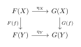
Remark 1.1 (Why is this important?). The importance of these categories in algebraic geometry lies in the fact that they provide us with a structuUniBlue framework for research.
Morphisms of Presheaves: As we shall see in Chapter 1, a morphism between presheaves \phi: \mathcal{F} \to \mathcal{G} is precisely a natural transformation between the functors \mathcal{F} and \mathcal{G}. The commutativity of the diagram ensures compatibility with restriction maps.
Equivalence of Categories: We say two categories \mathcal{C} and \mathbf{D} are equivalent if there exist functors F: \mathcal{C} \to \mathbf{D} and G: \mathbf{D} \to \mathcal{C} such that G \circ F \cong \operatorname{id}_{\mathcal{C}} and F \circ G \cong \operatorname{id}_{\mathbf{D}} (natural isomorphisms). This is the rigorous language behind our theorem \mathsf{Mod}_A \simeq \mathsf{QCoh}(\operatorname{Spec} A).
Definition 1.6 (Functor Category). Let \mathcal{C} and \mathbf{D} be two categories. The functor category from \mathcal{C} to \mathbf{D}, denoted by \mathsf{Fun}(\mathcal{C}, \mathbf{D}) or \mathbf{D}^{\mathcal{C}}, is the category defined by the following data:
Objects: The objects are all covariant functors F: \mathcal{C} \to \mathbf{D}.
Morphisms: For any two functors F, G \in \mathsf{Fun}(\mathcal{C}, \mathbf{D}), a morphism \alpha: F \to G is a natural transformation between them. That is, \alpha consists of a collection of morphisms in \mathbf{D}: \{ \alpha_X: F(X) \to G(X) \}_{X \in \mathcal{C}} such that for every morphism f: X \to Y in \mathcal{C}, the following diagram in \mathbf{D} commutes:
Composition: The composition of morphisms is given by the vertical composition of natural transformations. For \alpha: F \to G and \beta: G \to H, their composition \beta \circ \alpha: F \to H is defined componentwise: (\beta \circ \alpha)_X := \beta_X \circ \alpha_X \quad \forall X \in \mathcal{C}.
Identity: For each functor F, the identity morphism \mathrm{id}_F: F \to F is given by the identity components (\mathrm{id}_F)_X = \mathrm{id}_{F(X)} for all X \in \mathcal{C}.
Remark 1.1 (The Pointwise Principle). A defining philosophy of the functor category \mathsf{Fun}(\mathcal{C}, \mathbf{D}) is that limits, colimits, and algebraic structures are inherited pointwise from \mathbf{D}.
If \mathbf{D} is an Abelian category (such as \mathsf{Ab} or \mathsf{Mod}(R)), then \mathsf{Fun}(\mathcal{C}, \mathbf{D}) automatically becomes an Abelian category. For any natural transformation \alpha: F \to G, its kernel and cokernel functors are computed object-by-object in the domain: (\ker \alpha)(X) := \ker(\alpha_X), \quad (\mathrm{coker}\, \alpha)(X) := \mathrm{coker}(\alpha_X). This is precisely why the category of presheaves \mathsf{PSh}(X, \mathcal{C}) := \mathsf{Fun}(\mathsf{Open}(X)^{\mathrm{op}}, \mathcal{C}) is Abelian whenever \mathcal{C} is abelian.
Monomorphism and Epimorphism
In category theory, we define properties of morphisms not by looking at elements (which may not exist), but by their interaction with other morphisms (cancellation properties).
Definition 1.7 (Monomorphism and Epimorphism). Let f: X \to Y be a morphism in a category \mathcal{C}.
f is a monomorphism (or mono) if it is left-cancellable. For any object Z and any morphisms g_1, g_2: Z \to X: f \circ g_1 = f \circ g_2 \implies g_1 = g_2. (Notation: X \hookrightarrow Y).
f is an epimorphism (or epi) if it is right-cancellable. For any object Z and any morphisms h_1, h_2: Y \to Z: h_1 \circ f = h_2 \circ f \implies h_1 = h_2. (Notation: X \twoheadrightarrow Y).
Definition 1.8 (Isomorphism). A morphism f: X \to Y is an isomorphism if there exists a morphism g: Y \to X (called the inverse) such that: g \circ f = \operatorname{id}_X \quad \text{and} \quad f \circ g = \operatorname{id}_Y. If such an f exists, we say X and Y are isomorphic (X \cong Y).
Remark 1.1 (Bimorphisms are not Isomorphisms). A morphism that is both mono and epi is called a bimorphism.
Warning: A bimorphism is NOT necessarily an isomorphism!
In \mathsf{Set} and \mathsf{Mod}_A where A is a ring, Bimorphism \iff Isomorphism.
In \mathsf{Ring}, the inclusion \mathbb{Z} \hookrightarrow \mathbb{Q} is both mono and epi, but clearly not an isomorphism.
In \mathsf{Top}, a continuous bijection is both mono and epi, but not necessarily a homeomorphism (the inverse might not be continuous).
In algebraic geometry, checking isomorphism requires constructing the inverse explicitly.
Limit and Colimit
Limits and colimits generalize constructions like products, intersections, kernels, and direct sums. They are defined via Universal Properties. Let \mathcal{C} and \mathcal{J} be categories, and let F: \mathcal{J} \to \mathcal{C} be a functor (often called a diagram of shape \mathcal{J} in \mathcal{C}).
Definition 1.9 (Cone and Limit). A cone to the diagram F consists of an object N \in \mathcal{C} together with a family of morphisms \psi_j: N \to F(j) for each object j \in \mathcal{J}, such that for every morphism f: j \to k in \mathcal{J}, the condition F(f) \circ \psi_j = \psi_k holds.
The limit of F is a universal cone (L, \phi). That is, it is a cone with an object L \in \mathcal{C} and morphisms \phi_j: L \to F(j), such that for any other cone (N, \psi) to F, there exists a unique morphism u: N \to L making the following diagram commute for all morphisms f: j \to k in \mathcal{J}:
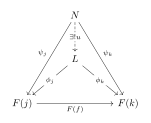
Definition 1.10 (Cocone and Colimit). A cocone from the diagram F consists of an object N \in \mathcal{C} together with a family of morphisms \psi_j: F(j) \to N for each object j \in \mathcal{J}, such that for every morphism f: j \to k in \mathcal{J}, the condition \psi_k \circ F(f) = \psi_j holds.
The colimit of F is a universal cocone (C, \phi). That is, it is a cocone with an object C \in \mathcal{C} and morphisms \phi_j: F(j) \to C, such that for any other cocone (N, \psi) from F, there exists a unique morphism u: C \to N making the following diagram commute for all morphisms f: j \to k in \mathcal{J}:
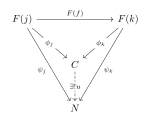
Many fundamental constructions in mathematics are just limits or colimits evaluated over specific shapes of index categories (diagrams). Let \mathcal{J} denote the index category.
- 1. Product
-
Type: Limit
Diagram Shape: \mathcal{J} is a discrete category. It consists of a set of objects (the index set) with absolutely no morphisms between them other than the mandatory identity morphisms. - 2. Coproduct
-
Type: Colimit
Diagram Shape: \mathcal{J} is a discrete category (exactly the same shape as the product). - 3. Fiber Product
-
Type: Limit
Diagram Shape: In category theory, this is completely synonymous with the Pullback. Therefore, the index category \mathcal{J} is a three-object category with two arrows pointing to a common target (\bullet \rightarrow \bullet \leftarrow \bullet). - 4. Fiber Coproduct
-
Type: Colimit
Diagram Shape: This is categorically synonymous with the Pushout. The index category \mathcal{J} is a three-object category with two arrows originating from a common source (\bullet \leftarrow \bullet \rightarrow \bullet). - 5. Equalizer
-
Type: Limit
Diagram Shape: \mathcal{J} consists of two objects and two parallel morphisms between them.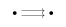
- 6. Coequalizer
-
Type: Colimit
Diagram Shape: \mathcal{J} consists of two objects and two parallel morphisms between them (exactly the same shape as the equalizer). - 7. Inverse Limit (Projective Limit)
-
Type: Limit
Diagram Shape: \mathcal{J} is a directed poset (partially ordeUniBlue set) treated as a category, or more generally a cofiltered category. Morphisms represent the ordering, and the arrows in the diagram point "backwards" relative to the index ordering (i.e., if i \leq j, there is a transition map F(j) \to F(i)). - 8. Direct Limit (Injective Limit)
-
Type: Colimit
Diagram Shape: \mathcal{J} is a directed poset, or more generally a filtered category. If i \leq j in the poset, there is a transition map F(i) \to F(j).
Abelian Category and Adjoint Functor
Additive Category
To do homological algebra (kernels, exact sequences, cohomology), we need categories with more structure than just sets and maps. We build this structure in layers: from Additive to Abelian.
Definition 1.11 (Zero Object). An object 0 is a zero object if it is both initial and terminal. That is, for any object X, there are unique morphisms 0 \to X and X \to 0. If a category has a zero object, we define the zero morphism 0_{XY}: X \to Y as the unique composite X \to 0 \to Y.
Definition 1.12 (Additive Category). A category \mathcal{C} is additive if:
It has a zero object.
It has all finite binary products (and thus coproducts). In fact, in this setting, products and coproducts coincide: X \times Y \cong X \oplus Y (called biproducts).
Every set of morphisms \operatorname{Hom}(X, Y) has the structure of an Abelian group, such that composition is bilinear.
Examples: \mathsf{Ab}, \mathsf{Mod}_R, but not \mathsf{Ring} or \mathsf{Set}.
Abelian Category
An additive category is Abelian if it behaves like the category of Abelian groups. The critical requirement is the First Isomorphism Theorem.
Definition 1.13 (Abelian Category). An additive category \mathcal{A} is Abelian if:
Every morphism has a kernel and a cokernel.
Every monomorphism is the kernel of its cokernel.
Every epimorphism is the cokernel of its kernel.
(The Isomorphism Theorem) For every morphism f: X \to Y, the canonical induced morphism \bar{f}: \operatorname{coim} f \to \operatorname{im} f is an isomorphism.
Remark 1.1 (Canonical Factorization). In
an Abelian category, every morphism f: X
\to Y admits a unique canonical factorization:
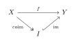
Exactness
With kernels and images defined via universal properties, we can rigorously define exact sequences in any Abelian category (including sheaves).
Definition 1.14 (Exact Sequence). A sequence of morphisms X \xrightarrow{f} Y \xrightarrow{g} Z is exact at Y if: \operatorname{im} f = \ker g. (More precisely, the monomorphism \operatorname{im} f \hookrightarrow Y is equivalent to the monomorphism \ker g \hookrightarrow Y). A sequence 0 \to X \to Y \to Z \to 0 is a short exact sequence if it is exact at X, Y, and Z. This is equivalent to saying X = \ker(Y \to Z) and Z = \operatorname{coker}(X \to Y).
Definition 1.15 (Exact and One-Sided Exact Functors). Let \mathcal{A} and \mathcal{B} be Abelian categories, and let F: \mathcal{A} \to \mathcal{B} be an additive covariant functor. Consider an arbitrary short exact sequence in \mathcal{A}: 0 \longrightarrow A \xrightarrow{\ f\ } B \xrightarrow{\ g\ } C \longrightarrow 0 Applying the functor F yields a complex in \mathcal{B}: 0 \longrightarrow F(A) \xrightarrow{\ F(f)\ } F(B) \xrightarrow{\ F(g)\ } F(C) \longrightarrow 0
We classify the functor F based on the degree to which it preserves the exactness of this sequence:
F is called left exact if the following sequence in \mathcal{B} is exact: 0 \longrightarrow F(A) \xrightarrow{\ F(f)\ } F(B) \xrightarrow{\ F(g)\ } F(C) Equivalently, F preserves kernels.
F is called right exact if the following sequence in \mathcal{B} is exact: F(A) \xrightarrow{\ F(f)\ } F(B) \xrightarrow{\ F(g)\ } F(C) \longrightarrow 0 Equivalently, F preserves cokernels.
F is called exact if it is both left exact and right exact. That is, the full sequence remains short exact in \mathcal{B}: 0 \longrightarrow F(A) \xrightarrow{\ F(f)\ } F(B) \xrightarrow{\ F(g)\ } F(C) \longrightarrow 0 Equivalently, F preserves all finite limits and finite colimits.
Dually, if G: \mathcal{A} \to \mathcal{B} is an additive contravariant functor, the arrows reverse. In this case, G is called:
Left exact if 0 \to G(C) \to G(B) \to G(A) is exact. (e.g., the hom-functor \operatorname{Hom}_{\mathcal{A}}(-, M)).
Right exact if G(C) \to G(B) \to G(A) \to 0 is exact.
Exact if 0 \to G(C) \to G(B) \to G(A) \to 0 is exact.
Example 1.1 (Examples of Exactness in Algebra). Let R be a commutative ring, and let \mathcal{A} = \mathcal{B} = \mathsf{Mod}_R be the Abelian category of R-modules. We illustrate different exactness behaviors using classical algebraic constructions:
Left Exact (but not Right Exact) Covariant Functors: For a fixed R-module M, the hom-functor F = \operatorname{Hom}_R(M, -): \mathsf{Mod}_R \to \mathsf{Mod}_R is always left exact. As a concrete example, take R = \mathbb{Z}, M = \mathbb{Z}/2\mathbb{Z}. Consider the standard short exact sequence of \mathbb{Z}-modules (Abelian groups): 0 \longrightarrow \mathbb{Z} \xrightarrow{\ \times 2\ } \mathbb{Z} \xrightarrow{\ \pi\ } \mathbb{Z}/2\mathbb{Z} \longrightarrow 0 Applying \operatorname{Hom}_\mathbb{Z}(\mathbb{Z}/2\mathbb{Z}, -) yields the sequence: 0 \longrightarrow 0 \longrightarrow 0 \longrightarrow \mathbb{Z}/2\mathbb{Z} The rightmost map is forced to be a zero map, which fails to be surjective onto \mathbb{Z}/2\mathbb{Z}. Thus, it is left exact but not right exact. The failure of right exactness here leads directly to the definition of the extension groups \operatorname{Ext}^n_\mathbb{Z}(\mathbb{Z}/2\mathbb{Z}, -).
Left Exact (but not Right Exact) Contravariant Functors: Dually, the contravariant hom-functor G = \operatorname{Hom}_R(-, M): \mathsf{Mod}_R^{\operatorname{op}} \to \mathsf{Mod}_R is left exact. Using R = \mathbb{Z} and M = \mathbb{Z}, apply \operatorname{Hom}_\mathbb{Z}(-, \mathbb{Z}) to the same sequence above. It yields: 0 \longrightarrow \operatorname{Hom}_\mathbb{Z}(\mathbb{Z}/2\mathbb{Z}, \mathbb{Z}) \longrightarrow \operatorname{Hom}_\mathbb{Z}(\mathbb{Z}, \mathbb{Z}) \longrightarrow \operatorname{Hom}_\mathbb{Z}(\mathbb{Z}, \mathbb{Z}) Since \operatorname{Hom}_\mathbb{Z}(\mathbb{Z}/2\mathbb{Z}, \mathbb{Z}) = 0 and \operatorname{Hom}_\mathbb{Z}(\mathbb{Z}, \mathbb{Z}) \cong \mathbb{Z}, this becomes: 0 \longrightarrow 0 \longrightarrow \mathbb{Z} \xrightarrow{\ \times 2\ } \mathbb{Z} This sequence is short exact on the left, but the multiplication by 2 map is not surjective, so the sequence breaks on the right.
Right Exact (but not Left Exact) Covariant Functors: For a fixed R-module M, the tensor product functor T = (- \otimes_R M): \mathsf{Mod}_R \to \mathsf{Mod}_R is always right exact. Take R = \mathbb{Z} and M = \mathbb{Z}/2\mathbb{Z}. Apply (- \otimes_\mathbb{Z} \mathbb{Z}/2\mathbb{Z}) to the sequence 0 \to \mathbb{Z} \xrightarrow{\times 2} \mathbb{Z} \to \mathbb{Z}/2\mathbb{Z} \to 0. Utilizing the standard isomorphism X \otimes_\mathbb{Z} \mathbb{Z}/2\mathbb{Z} \cong X/2X, the resulting sequence is: \mathbb{Z}/2\mathbb{Z} \xrightarrow{\ \times 2\ } \mathbb{Z}/2\mathbb{Z} \xrightarrow{\ \cong\ } \mathbb{Z}/2\mathbb{Z} \longrightarrow 0 Since the first map is multiplication by 2 on \mathbb{Z}/2\mathbb{Z}, it is the zero map. Thus, its kernel is the entire space \mathbb{Z}/2\mathbb{Z}, meaning the sequence is not exact on the left (0 \to \mathbb{Z}/2\mathbb{Z} is lost). This failure of left exactness is precisely what the torsion groups \operatorname{Tor}_n^\mathbb{Z}(-, \mathbb{Z}/2\mathbb{Z}) measure.
Completely Exact Functors:
Localization: Let S \subset R be a multiplicatively closed subset. The localization functor S^{-1}(-): \mathsf{Mod}_R \to \mathsf{Mod}_{S^{-1}R} is a completely exact covariant functor. It preserves both kernels and cokernels simultaneously.
Flat and Projective Modules: If a module M is flat (e.g., M = \mathbb{Q} as a \mathbb{Z}-module), then the right-exact functor (- \otimes_R M) becomes completely exact. Similarly, if M is projective (or free, like \mathbb{Z}^n), then the left-exact functor \operatorname{Hom}_R(M, -) becomes completely exact.
Adjoint Functor
"Adjoint functors arise everywhere." This slogan captures the essence of modern mathematics. Most canonical constructions (free objects, completions, spectra, sheafification) are instances of adjoint functors.
The most intuitive definition of adjunction is through a natural bijection of Hom-sets. It expresses a duality between two functors.
Definition 1.16 (Adjunction). Let F: \mathcal{C} \to \mathbf{D} and G: \mathbf{D} \to \mathcal{C} be two functors. We say that F is the left adjoint to G (and G is the right adjoint to F), denoted F \dashv G, if there exists a bijection of sets: \Phi_{X,Y}: \operatorname{Hom}_{\mathbf{D}}(F(X), Y) \xrightarrow{\sim} \operatorname{Hom}_{\mathcal{C}}(X, G(Y)) which is natural in both X \in \mathcal{C} and Y \in \mathbf{D}.
Naturality means that for any morphisms f: X' \to X in \mathcal{C} and g: Y \to Y' in \mathbf{D}, the following diagrams commute (compatible with pre-composition and post-composition).
By analyzing the identity morphisms under the bijection \Phi, we extract two fundamental natural transformations that characterize the adjunction.
Definition 1.17 (Unit and Counit of an Adjunction). Let F \dashv G.
Unit: By setting Y = F(X), the identity \operatorname{id}_{F(X)} corresponds to a morphism \eta_X: X \to G(F(X)). This defines a natural transformation: \eta: \operatorname{id}_{\mathcal{C}} \longrightarrow G \circ F called the unit of the adjunction.
Counit: By setting X = G(Y), the identity \operatorname{id}_{G(Y)} corresponds to a morphism \varepsilon_Y: F(G(Y)) \to Y. This defines a natural transformation: \varepsilon: F \circ G \longrightarrow \operatorname{id}_{\mathbf{D}} called the counit of the adjunction.
Theorem 1.1 (Triangle Identities). Two functors F, G form an adjunction (F, G, \eta, \varepsilon) if and only if they satisfy the Triangle Identities:
The composition F \xrightarrow{F\eta} F G F \xrightarrow{\varepsilon F} F is the identity \operatorname{id}_F.
The composition G \xrightarrow{\eta G} G F G \xrightarrow{G\varepsilon} G is the identity \operatorname{id}_G.
Proof. See Theorem (Mac Lane 1998, Chapter IV: Adjoints, Theorem IV.1) of Mac Lane (1998) for the full characterization via triangle identities. ◻
RAPL and LAPC
This is the most practically useful theorem for algebraic geometry. It tells us "for free" whether a functor is exact (or half-exact).
Theorem 1.1 (RAPL and LAPC). Let F: \mathcal{C} \to \mathbf{D} be a left adjoint and G: \mathbf{D} \to \mathcal{C} be a right adjoint (F \dashv G).
Right Adjoints Preserve Limits (RAPL): G preserves all limits that exist in \mathbf{D}. G(\varprojlim Y_i) \cong \varprojlim G(Y_i). In particular, G preserves kernels and products. Thus, a right adjoint between Abelian categories is always left exact.
Left Adjoints Preserve Colimits (LAPC): F preserves all colimits that exist in \mathcal{C}. F(\varinjlim X_i) \cong \varinjlim F(X_i). In particular, F preserves cokernels and direct sums. Thus, a left adjoint between Abelian categories is always right exact.
Proof. We prove statement 1 (RAPL) using the standard hom-set characterization of limits combined with the Yoneda Lemma. Statement 2 (LAPC) follows by a strictly dual argument on the opposite categories \mathcal{C}^{\operatorname{op}} and \mathbf{D}^{\operatorname{op}}.
Let J be a small index category, and let D: J \to \mathbf{D} be a diagram (mapping j \mapsto Y_j) whose limit \varprojlim Y_j exists in \mathbf{D}. To show that G(\varprojlim Y_j) is the limit of the composed diagram G \circ D: J \to \mathcal{C} (mapping j \mapsto G(Y_j)), it suffices to show that G(\varprojlim Y_j) satisfies the same universal property.
Let X be any arbitrary object in \mathcal{C}. We compute the hom-set \operatorname{Hom}_{\mathcal{C}}(X, G(\varprojlim Y_j)) by chain of canonical bijections:
\begin{align*} \operatorname{Hom}_{\mathcal{C}}\left(X, G\left(\varprojlim Y_j\right)\right) &\cong \operatorname{Hom}_{\mathbf{D}}\left(FX, \varprojlim Y_j\right) && \text{(by Adjunction } F \dashv G\text{)} \\ &\cong \varprojlim \operatorname{Hom}_{\mathbf{D}}(FX, Y_j) && \text{(by definition of limits in } \mathsf{Set}\text{)} \\ &\cong \varprojlim \operatorname{Hom}_{\mathcal{C}}(X, G(Y_j)) && \text{(by Adjunction } F \dashv G \text{ componentwise)} \\ &\cong \operatorname{Hom}_{\mathcal{C}}\left(X, \varprojlim G(Y_j)\right) && \text{(by definition of limits in } \mathsf{Set}\text{)} \end{align*}
Since this chain of isomorphisms is natural in X, the Yoneda Lemma (specifically, the fact that the Yoneda embedding is fully faithful) guarantees that the objects representing these two isomorphic functors must be canonically isomorphic in \mathcal{C}: G\left(\varprojlim Y_j\right) \cong \varprojlim G(Y_j) Hence, the right adjoint G preserves all limits.
Now, assume \mathcal{C} and \mathbf{D} are Abelian categories. A kernel is a specific finite limit (the equalizer of a morphism and the zero morphism), and a product is a general limit. Since G preserves all limits, it automatically preserves kernels and products. By the definition established in Definition , an additive functor that preserves kernels is precisely a left exact functor. Thus, every right adjoint between Abelian categories is left exact.
Dually, since a left adjoint F preserves all colimits, it preserves cokernels (which are coequalizers) and direct sums (which are coproducts). Therefore, F is automatically a right exact functor. ◻
Example 1.1 (Free Modules). Let A be a ring. The "free module functor" S \mapsto A^{\oplus S} (from Sets to A-Modules) is left adjoint to the forgetful functor (taking the underlying set). \operatorname{Hom}_A(A^{\oplus S}, M) \cong \operatorname{Hom}_{\mathsf{Set}}(S, M).
Fundamental Lemmas of Homological Algebra
The Snake Lemma
Proving diagram lemmas (like the Snake Lemma or Five Lemma) using only the universal properties of kernels and cokernels in an arbitrary Abelian category is notoriously tedious. However, we can bypass this complexity using a powerful "metatheorem" from category theory.
Theorem 1.1 (Freyd-Mitchell Embedding Theorem). Every small Abelian category admits an exact, fully faithful embedding into the category of modules over some ring R.
Proof. See (Freyd 1964, 7: Embedding Theorems). ◻
To prove a diagrammatic statement about exactness in any Abelian category, it suffices to prove it for categories of modules. This allows us to use the method of "diagram chasing" with elements, which is far more intuitive. In the proofs below, we treat objects as modules and morphisms as linear maps.
Lemma 1.1 (The Snake Lemma). Consider a
commutative diagram with exact rows:
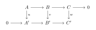
Proof. The exactness at \ker u, \ker v and \operatorname{coker} v, \operatorname{coker} w is standard. The non-trivial part is the construction of \delta and exactness at the "snake" turn.
Step 1: Construction of \delta (The Switchback): Let z \in \ker w \subseteq C.
Since B \to C is surjective, lift z to y \in B. Map y down to B' to get v(y). Commutativity implies the image of v(y) in C' is w(z) = 0. By exactness of the bottom row, v(y) comes from a unique element x' \in A'. Define \delta(z) := [x'] \in \operatorname{coker} u = A' / \operatorname{im}(u).
One checks easily that \delta is well-defined (independent of the choice of lift y).
Step 2: Exactness at \ker w: Let z \in \ker w. \delta(z) = 0 \iff x' \in \operatorname{im}(u) \iff x' = u(x) for some x \in A. By injectivity of A' \to B', v(y) = \text{image of } u(x). By commutativity, v(y) = v(\text{image of } x). Thus y - (\text{image of } x) \in \ker v. This means z (which is the image of y) is the image of an element in \ker v.
Step 3: Exactness at \operatorname{coker} u: Let \bar{x'} \in \operatorname{coker} u be the class of x' \in A'. Maps to 0 in \operatorname{coker} v \iff the image of x' in B' is in \operatorname{im}(v). Let this image be v(y) for some y \in B. Let z be the image of y in C. Then w(z) = \text{image of } v(y) = \text{image of } (\text{image of } x') = 0. So z \in \ker w. By construction, \delta(z) = \bar{x'}. ◻
The Five Lemma
Instead of chasing the massive diagram of the Five Lemma directly, we deduce it from the Short Five Lemma, which is cleaner.
Lemma 1.1 (Short Five Lemma). Consider a
commutative diagram with exact rows:
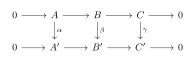
If \alpha, \gamma are injective, then \beta is injective.
If \alpha, \gamma are surjective, then \beta is surjective.
If \alpha, \gamma are isomorphisms, then \beta is an isomorphism.
Proof. (i) Suppose \beta(b) = 0. The image in C' is \gamma(\text{image of } b) = 0. Since \gamma is injective, the image of b in C is 0. By exactness, b comes from a \in A. Then \alpha(a) maps to \beta(b)=0 in B'. Since A' \to B' is injective, \alpha(a)=0. Since \alpha is injective, a=0, so b=0. (ii) Similar diagram chasing (or duality). (iii) follows from (i) and (ii). ◻
Theorem 1.1. The Five Lemma
Consider the commutative diagram with exact rows:
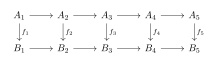
Proof. We break the diagram into two "short" pieces. Let K_i = \ker(A_i \to A_{i+1}) = \operatorname{im}(A_{i-1} \to A_i) (and similarly L_i for B’s). The diagram induces maps on these kernels/images.
Right side: The map f_4 restricts to an isomorphism between \operatorname{im}(A_3 \to A_4) and \operatorname{im}(B_3 \to B_4) (injectivity uses f_5, surjectivity uses f_4). Let’s call these images I_3 and J_3.
Left side: Similarly, f_2 induces an isomorphism between \operatorname{coker}(A_1 \to A_2) and \operatorname{coker}(B_1 \to B_2). Let’s call these K_3 and L_3.
Middle: We now have a short exact sequence diagram:
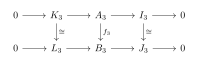
By the Short Five Lemma, f_3 is an isomorphism.
◻
The 9-Lemma
Theorem 1.1 (The 9-Lemma (3 \times 3 Lemma)). Let \mathcal{A} be an Abelian category.
Consider the following commutative diagram in \mathcal{A}:
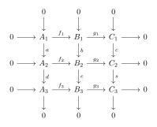
Dually, if all columns are exact and the top two rows are exact, then the bottom row is exact.
Proof. We prove the main statement by view the columns as short exact sequences and applying the Snake Lemma to the maps between the rows.
Consider rows 2 and 3 as vertical short exact sequences mapping down, but let us re-frame the setup. Notice that the columns are exact, which means: A_1 \cong \operatorname{Ker}(d), \quad B_1 \cong \operatorname{Ker}(e), \quad C_1 \cong \operatorname{Ker}(s) A_3 \cong \operatorname{coker}(a), \quad B_3 \cong \operatorname{coker}(b), \quad C_3 \cong \operatorname{coker}(c)
Now, focus entirely on the commutative diagram formed by
Row 2 and Row 3. We can view the
vertical maps d: A_2 \to A_3,
e: B_2 \to B_3, and s: C_2 \to C_3 as a chain map between
two short exact sequences. This gives us the perfect setup to
apply the Snake Lemma to the following rows:
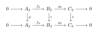
Now, we substitute the known kernels and cokernels from the exact columns back into this 6-term sequence:
Replace \operatorname{Ker}(d), \operatorname{Ker}(e), \operatorname{Ker}(s) with A_1, B_1, C_1.
Replace \operatorname{coker}(d), \operatorname{coker}(e), \operatorname{coker}(s) with A_3, B_3, C_3.
Under these canonical identifications, the induced maps between the kernels are precisely the maps from Row 1 (f_1 and g_1). The sequence becomes: 0 \longrightarrow A_1 \xrightarrow{\ f_1\ } B_1 \xrightarrow{\ g_1\ } C_1 \xrightarrow{\ \delta\ } A_3 \xrightarrow{\ f_3\ } B_3 \xrightarrow{\ g_3\ } C_3 \longrightarrow 0
Since this entire sequence is exact, we look at the first three terms: 0 \longrightarrow A_1 \xrightarrow{\ f_1\ } B_1 \xrightarrow{\ g_1\ } C_1 This gives us exactness at A_1 and B_1.
To complete the proof, we must show that g_1: B_1 \to C_1 is an epimorphism (exact at C_1), which means we need the connecting morphism \delta: C_1 \to A_3 to be the zero map. Look at the continuation of the exact sequence right after \delta: the map following \delta is f_3: A_3 \to B_3. However, by the explicit construction of the rows, f_3 is a monomorphism (since Row 3 is short exact, its left-most map f_3 has a zero kernel).
By exactness of the 6-term sequence at A_3, we have: \operatorname{im}(\delta) = \operatorname{Ker}(f_3) Since f_3 is a monomorphism, \operatorname{Ker}(f_3) = 0. Therefore, \operatorname{im}(\delta) = 0, which forces the connecting morphism \delta to be the zero map.
Because \delta = 0, the exactness at C_1 implies \operatorname{Ker}(\delta) = C_1 = \operatorname{im}(g_1), meaning g_1 is a surjective map (epimorphism).
Gathering these components together, the sequence 0 \to A_1 \xrightarrow{f_1} B_1 \xrightarrow{g_1} C_1 \to 0 is short exact. This completely establishes the exactness of Row 1. ◻
The Splitting Lemma
Theorem 1.1 (The Splitting Lemma). Let
\mathcal{A} be an Abelian
category. Given a short exact sequence in \mathcal{A}:
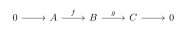
Left Split: There exists a morphism p: B \to A such that p \circ f = \operatorname{id}_A.
Right Split: There exists a morphism s: C \to B such that g \circ s = \operatorname{id}_C.
Direct Sum Decomposition: B is isomorphic to the direct sum A \oplus C. Under this isomorphism, f is the canonical inclusion i_A: A \to A \oplus C and g is the canonical projection \pi_C: A \oplus C \to C.
Proof. We establish the equivalences by showing (3) \implies (1), (3) \implies (2), and finally demonstrating that (1) and (2) each independently reconstruct the data of the biproduct structure (3).
Implies directions: (3) \implies (1) and (3) \implies (2) Assume statement (3) holds, so B \cong A \oplus C via an isomorphism \phi: B \to A \oplus C. Let i_A: A \to A \oplus C and \pi_A: A \oplus C \to A be the canonical inclusion and projection for A, and similarly define i_C, \pi_C for C. We are given f = \phi^{-1} \circ i_A and g = \pi_C \circ \phi.
To satisfy (1), define p = \pi_A \circ \phi. Then p \circ f = (\pi_A \circ \phi) \circ (\phi^{-1} \circ i_A) = \pi_A \circ i_A = \operatorname{id}_A.
To satisfy (2), define s = \phi^{-1} \circ i_C. Then g \circ s = (\pi_C \circ \phi) \circ (\phi^{-1} \circ i_C) = \pi_C \circ i_C = \operatorname{id}_C.
Reconstruction from Left Split: (1) \implies (3) Assume there exists p: B \to A such that p \circ f = \operatorname{id}_A. Consider the morphism \operatorname{id}_B - f \circ p: B \to B. Composing this with f from the right yields: (\operatorname{id}_B - f \circ p) \circ f = f - f \circ (p \circ f) = f - f \circ \operatorname{id}_A = 0 By the universal property of the cokernel, since g: B \to C is the cokernel of f, there exists a unique morphism s: C \to B such that: s \circ g = \operatorname{id}_B - f \circ p \implies \operatorname{id}_B = f \circ p + s \circ g Now, compose s \circ g = \operatorname{id}_B - f \circ p with g from the left. Since g \circ f = 0, we get g \circ s \circ g = g. Since g is an epimorphism, we can cancel it from the right, yielding g \circ s = \operatorname{id}_C.
We now have four maps (f, g, p, s) satisfying: p \circ f = \operatorname{id}_A, \quad g \circ s = \operatorname{id}_C, \quad p \circ s = 0, \quad g \circ f = 0, \quad f \circ p + s \circ g = \operatorname{id}_B (Note: p \circ s = 0 follows by applying p to s \circ g = \operatorname{id}_B - f \circ p). These are precisely the algebraic identities defining a biproduct (direct sum) in an additive/Abelian category. Thus, B \cong A \oplus C, matching statement (3).
Reconstruction from Right Split: (2) \implies (3) Assume there exists s: C \to B such that g \circ s = \operatorname{id}_C. Dually, consider \operatorname{id}_B - s \circ g: B \to B. Composing with g from the left yields g - g \circ s \circ g = 0. By the universal property of the kernel, since f: A \to B is the kernel of g, there exists a unique morphism p: B \to A such that f \circ p = \operatorname{id}_B - s \circ g. By a strictly dual argument to the previous section, this completes the biproduct identities, forcing B \cong A \oplus C. ◻
Kan Extension and Representable Functor
Comma Category
Definition 1.18 (Comma Category (S \downarrow T)). Let \mathcal{A}, \mathcal{B}, and \mathcal{C} be categories, and let S: \mathcal{A} \to \mathcal{C} and T: \mathcal{B} \to \mathcal{C} be functors. The comma category (S \downarrow T) is defined as follows:
Objects: Triples (A, B, h), where A is an object in \mathcal{A}, B is an object in \mathcal{B}, and h: S(A) \to T(B) is a morphism in \mathcal{C}.
Morphisms: A morphism from (A, B, h) to (A', B', h') is a pair (f, g) where f: A \to A' is a morphism in \mathcal{A} and g: B \to B' is a morphism in \mathcal{B}, such that the following diagram commutes in \mathcal{C}:
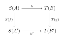
Important special cases of comma categories occur when one of the categories is the trivial category \mathbf{1} (containing one object and one identity morphism).
If T: \mathbf{1} \to \mathcal{C} picks out an object c \in \mathcal{C} and S = \text{Id}_{\mathcal{C}}, we get the slice category (\mathcal{C} \downarrow c), often denoted \mathcal{C}/c. Objects are morphisms x \to c.
If S: \mathbf{1} \to \mathcal{C} picks out an object c \in \mathcal{C} and T = \text{Id}_{\mathcal{C}}, we get the coslice category (c \downarrow \mathcal{C}), often denoted c/\mathcal{C}. Objects are morphisms c \to x.
Example 1.1 (The Category of R-Algebras). Let \mathsf{CRing} be the category of commutative rings with unity. Let R be a fixed commutative ring.
The category of commutative R-algebras, denoted R\mathsf{-Alg}, is exactly the coslice category (R \downarrow \mathsf{CRing}).
Objects: An object is a pair (A, \phi_A), where A is a commutative ring and \phi_A: R \to A is a ring homomorphism (the structural map). This precisely gives A the structure of an R-algebra.
Morphisms: A morphism between R-algebras (A, \phi_A) and (B, \phi_B) is a ring homomorphism f: A \to B such that the following triangle commutes in \mathsf{CRing}:
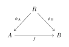
Kan Extension and Representable Functor
Definition 1.19 (Kan Extensions). Let \mathcal{C}, \mathcal{C}', and \mathbf{D} be categories, and let F: \mathcal{C} \to \mathbf{D} and K: \mathcal{C} \to \mathcal{C}' be functors.
The Left Kan Extension of F along K consists of a functor \operatorname{Lan}_K F: \mathcal{C}' \to \mathbf{D} together with a natural transformation \eta: F \Rightarrow \operatorname{Lan}_K F \circ K satisfying the following universal property: for any functor G: \mathcal{C}' \to \mathbf{D} and any natural transformation \alpha: F \Rightarrow G \circ K, there exists a unique natural transformation \beta: \operatorname{Lan}_K F \Rightarrow G such that \alpha = (\beta \circ K) \circ \eta.
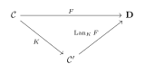
The Right Kan Extension of F along K consists of a functor \operatorname{Ran}_K F: \mathcal{C}' \to \mathbf{D} together with a natural transformation \varepsilon: \operatorname{Ran}_K F \circ K \Rightarrow F satisfying the following universal property: for any functor G: \mathcal{C}' \to \mathbf{D} and any natural transformation \gamma: G \circ K \Rightarrow F, there exists a unique natural transformation \delta: G \Rightarrow \operatorname{Ran}_K F such that \gamma = \varepsilon \circ (\delta \circ K).
Remark 1.1 (Representable Functors via Kan Extensions). By specifying the base and target categories, we can elegantly recover representable functors purely as Kan extensions.
Let \mathbf{1} be the unit category (consisting of a single object * and its identity morphism), and let \mathsf{Set} be the category of sets. Define I: \mathbf{1} \to \mathsf{Set} as the terminal functor mapping * to a singleton set \{*\}. Given a locally small category \mathcal{C} and a fixed object c \in \operatorname{Ob}(\mathcal{C}), let K_c: \mathbf{1} \to \mathcal{C} denote the functor mapping * to c.
Definition 1.20 (Representable Functor (Via Kan Extensions)). Let \mathcal{C} be a locally small category, c \in \mathcal{C} an object, and let K_c: \mathbf{1} \to \mathcal{C} be the functor from the terminal category mapping the unique object * to c. Let I: \mathbf{1} \to \mathsf{Set} be the identity functor mapping * to the singleton set \{*\}.
By considering the combinations of the base category (\mathcal{C} or \mathcal{C}^{\operatorname{op}}) and the type of Kan extension (Left or Right), we obtain four historical constructs that pairwise coincide:
The Covariant Case (Functors from \mathcal{C} to \mathsf{Set}):
The Left Kan extension of I along K_c yields a covariant functor: \operatorname{Lan}_{K_c} I : \mathcal{C} \to \mathsf{Set}, \quad x \mapsto \operatorname{Hom}_{\mathcal{C}}(c, x)
The Right Kan extension of I along the dual embedding K_c^{\operatorname{op}}: \mathbf{1} \to (\mathcal{C}^{\operatorname{op}})^{\operatorname{op}} \cong \mathcal{C} (viewing c from the contravariant perspective of \mathcal{C}^{\operatorname{op}}) yields an isomorphic covariant functor: \operatorname{Ran}_{K_c^{\operatorname{op}}} I : \mathcal{C} \to \mathsf{Set}, \quad x \mapsto \operatorname{Hom}_{\mathcal{C}^{\operatorname{op}}}(x, c) \cong \operatorname{Hom}_{\mathcal{C}}(c, x)
We define the standard covariant representable functor h^c: \mathcal{C} \to \mathsf{Set} as this canonical choice, uniquely characterized up to natural isomorphism by either construction: h^c \coloneqq \operatorname{Lan}_{K_c} I \cong \operatorname{Ran}_{K_c^{\operatorname{op}}} I
The Contravariant Case (Functors from \mathcal{C}^{\operatorname{op}} to \mathsf{Set}):
The Left Kan extension of I along the dual functor K_c^{\operatorname{op}}: \mathbf{1} \to \mathcal{C}^{\operatorname{op}} yields a contravariant functor: \operatorname{Lan}_{K_c^{\operatorname{op}}} I : \mathcal{C}^{\operatorname{op}} \to \mathsf{Set}, \quad x \mapsto \operatorname{Hom}_{\mathcal{C}^{\operatorname{op}}}(c, x) \cong \operatorname{Hom}_{\mathcal{C}}(x, c)
The Right Kan extension of I along K_c: \mathbf{1} \to \mathcal{C} (viewing the target as \mathcal{C}^{\operatorname{op}}) yields an isomorphic contravariant functor: \operatorname{Ran}_{K_c} I : \mathcal{C}^{\operatorname{op}} \to \mathsf{Set}, \quad x \mapsto \operatorname{Hom}_{\mathcal{C}}(x, c)
We define the standard contravariant representable functor h_c: \mathcal{C}^{\operatorname{op}} \to \mathsf{Set} as this canonical choice, uniquely characterized up to natural isomorphism by either construction: h_c \coloneqq \operatorname{Lan}_{K_c^{\operatorname{op}}} I \cong \operatorname{Ran}_{K_c} I
In general:
A covariant functor F: \mathcal{C} \to \mathsf{Set} is representable if there exists c \in \mathcal{C} such that F \cong h^c.
A contravariant functor G: \mathcal{C}^{\operatorname{op}} \to \mathsf{Set} is representable if there exists c \in \mathcal{C} such that G \cong h_c.
Computation of Kan Extension
Theorem 1.1 (Pointwise Kan Extension). Let F: \mathcal{C} \to \mathbf{D} and K: \mathcal{C} \to \mathcal{C}' be functors. Assume \mathcal{C} is small and \mathbf{D} is cocomplete (respectively, complete). Then the left (respectively, right) Kan extension of F along K exists and can be computed pointwise via comma categories.
Specifically, for any object c' \in \mathcal{C}', we have:
\operatorname{Lan}_K F(c') \cong \operatorname{colim} \left( (K \downarrow c') \xrightarrow{\Pi} \mathcal{C} \xrightarrow{F} \mathbf{D} \right)
\operatorname{Ran}_K F(c') \cong \lim \left( (c' \downarrow K) \xrightarrow{\Pi} \mathcal{C} \xrightarrow{F} \mathbf{D} \right)
where (K \downarrow c') and (c' \downarrow K) denote the comma categories, and \Pi is the canonical projection functor to \mathcal{C}.
Proof. We prove that the pointwise colimit assignment defines the left Kan extension by verifying its universal property. Assume \mathbf{D} is cocomplete, so for each c' \in \mathcal{C}', the colimit exists. Define a functor L: \mathcal{C}' \to \mathbf{D} on objects by: L(c') = \operatorname{colim} \left( (K \downarrow c') \xrightarrow{\Pi} \mathcal{C} \xrightarrow{F} \mathbf{D} \right) Let \lambda^{c'}: F \circ \Pi \Rightarrow \Delta_{L(c')} be the universal colimit cone, whose components are \lambda^{c'}_{(c, f: Kc \to c')}: Fc \to L(c').
First, we construct the universal natural transformation \eta: F \Rightarrow L \circ K. For any object c \in \mathcal{C}, consider the identity morphism \operatorname{id}_{Kc}: Kc \to Kc. This gives a specific object (c, \operatorname{id}_{Kc}) in the comma category (K \downarrow Kc). We define the component \eta_c: Fc \to L(Kc) to be the corresponding component of the colimit cone: \eta_c = \lambda^{Kc}_{(c, \operatorname{id}_{Kc})} The naturality of \eta follows directly from the functoriality of the colimit assignment under morphisms in \mathcal{C}.
Next, we verify the universal property. Let G: \mathcal{C}' \to \mathbf{D} be any functor, and let \alpha: F \Rightarrow G \circ K be a natural transformation. We must show there exists a unique natural transformation \sigma: L \Rightarrow G such that \sigma_K \circ \eta = \alpha.
Fix an object c' \in
\mathcal{C}'. To define \sigma_{c'}: L(c') \to
G(c'), we construct a competitor cone from the diagram
F \circ \Pi to the vertex G(c'). For any object (c, f: Kc \to c') in (K \downarrow c'), we define the
component of this competitor cone as the composite: Fc \xrightarrow{\alpha_c} G(Kc)
\xrightarrow{G(f)} G(c') By the naturality of \alpha, this collection of morphisms
forms a valid cone from F \circ
\Pi to G(c'). By the
universal property of the colimit L(c'), there exists a unique
morphism \sigma_{c'}: L(c') \to
G(c') such that for all (c,
f: Kc \to c'), the following diagram commutes:
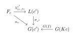
Property of Representable Functor
Proposition 1.1 (Evaluating the Representable Functor). Let h^c \coloneqq \operatorname{Lan}_{K_c} I be the covariant representable functor associated to c \in \mathcal{C}, where K_c: \mathbf{1} \to \mathcal{C} and I: \mathbf{1} \to \mathsf{Set}. Then for any object X \in \mathcal{C}, there is a canonical isomorphism: h^c(X) \cong \operatorname{Hom}_{\mathcal{C}}(c, X)
Proof. By Theorem , the evaluation of the left Kan extension h^c at X \in \mathcal{C} is given by the colimit: \operatorname{Lan}_{K_c} I(X) \cong \operatorname{colim} \left( (K_c \downarrow X) \xrightarrow{\Pi} \mathbf{1} \xrightarrow{I} \mathsf{Set} \right) The objects of the comma category (K_c \downarrow X) are pairs (*, f) where * is the unique object of \mathbf{1} and f: K_c(*) \to X is a morphism in \mathcal{C}. Since K_c(*) = c, the objects are exactly the morphisms f \in \operatorname{Hom}_{\mathcal{C}}(c, X).
Furthermore, because the unit category \mathbf{1} has only the identity morphism, there are no non-trivial morphisms between objects in (K_c \downarrow X). Thus, (K_c \downarrow X) is simply a discrete category whose objects are indexed by the set \operatorname{Hom}_{\mathcal{C}}(c, X).
The composite functor I \circ \Pi maps every object in this discrete category to the singleton set \{*\} \in \mathsf{Set}. The colimit of a constant functor mapping to a singleton set over a discrete category is just the coproduct of the singleton set with itself, indexed by the objects of the category. Therefore: \operatorname{colim} \left( (K_c \downarrow X) \to \mathsf{Set} \right) \cong \coprod_{f \in \operatorname{Hom}_{\mathcal{C}}(c, X)} \{*\} \cong \operatorname{Hom}_{\mathcal{C}}(c, X) This concludes the proof. ◻
Proposition 1.1 (Universal Characterization of the Representable Functor). Let c \in \mathcal{C} be an object, and let K_c: \mathbf{1} \to \mathcal{C} and I: \mathbf{1} \to \mathsf{Set} be defined as above. A covariant functor F: \mathcal{C} \to \mathsf{Set} is naturally isomorphic to the left Kan extension \operatorname{Lan}_{K_c} I if and only if for every covariant functor G: \mathcal{C} \to \mathsf{Set}, there is a natural bijection: \operatorname{Nat}(F, G) \cong G(c)
Proof. By the definition of the left Kan extension as a universal arrow or a left adjoint to the pre-composition functor, a functor F is defined to be \operatorname{Lan}_{K_c} I if and only if there exists a natural bijection: \operatorname{Nat}(F, G) \cong \operatorname{Nat}(I, G \circ K_c) for any target functor G: \mathcal{C} \to \mathsf{Set}.
Let us evaluate the right-hand side of this equivalence. The functor I: \mathbf{1} \to \mathsf{Set} maps the unique object * to \{*\}, and the composite functor G \circ K_c: \mathbf{1} \to \mathsf{Set} maps * to the set G(c). A natural transformation \alpha: I \Rightarrow G \circ K_c is entirely determined by its single component at the unique object *: \alpha_* : \{*\} \longrightarrow G(c) Giving a function from a singleton set \{*\} to a set G(c) is in bijective correspondence with choosing a single element in G(c). Therefore, there is a canonical bijection: \operatorname{Nat}(I, G \circ K_c) \cong G(c) Combining these two bijections, we conclude that F \cong \operatorname{Lan}_{K_c} I if and only if \operatorname{Nat}(F, G) \cong G(G), which is precisely the statement of the Yoneda Lemma if F is replaced by the standard hom-functor h^c. ◻
Example 1.1 (Advanced Examples of Representable Functors). We can rewrite many deep universal properties in commutative algebra, algebraic topology, and general category theory as instances of representable functors, or equivalently, as canonical Kan extensions from the terminal category \mathbf{1}.
Polynomial Rings (Free Objects in Commutative Algebra): Let \mathsf{CRing} be the category of commutative rings. Consider the covariant forgetful functor U: \mathsf{CRing} \to \mathsf{Set} which assigns each ring R to its underlying set of elements. This functor is representable. The representing object is the polynomial ring over integers in one variable, \mathbb{Z}[x]. By the universal property of polynomial rings, giving a ring homomorphism \mathbb{Z}[x] \to R is exactly equivalent to choosing an element in R. Thus, we have a natural isomorphism: U(R) \cong \operatorname{Hom}_{\mathsf{CRing}}(\mathbb{Z}[x], R) = h^{\mathbb{Z}[x]}(R) In our Kan extension framework, the forgetful functor is the free-object growth: U \cong \operatorname{Lan}_{K_{\mathbb{Z}[x]}} I.
Localization of Rings and Modules: Let R be a commutative ring and S \subset R a multiplicatively closed subset. Consider the category \mathcal{C} = S^{-1}\mathsf{CRing} of R-algebras under which the images of elements in S are invertible. The functor F: R\text{-}\mathsf{Alg} \to \mathsf{Set} that sends an R-algebra A to a singleton \{*\} if S maps to units in A (and \emptyset otherwise) is representable by the localized ring S^{-1}R: F(A) \cong \operatorname{Hom}_{R\text{-}\mathsf{Alg}}(S^{-1}R, A) = h^{S^{-1}R}(A) Similarly, for an R-module M, the localized module S^{-1}M represents the functor that collects R-bilinear maps from M \times S^{-1}R into other S^{-1}R-modules.
Eilenberg-MacLane Spaces K(G,n) (Algebraic Topology): Let \mathsf{Ho}(\mathsf{Top}_*) be the pointed homotopy category of topological spaces, and let G be an Abelian group (or just a group for n=1). Fix an integer n \ge 1. The n-th reduced cohomology functor \widetilde{H}^n(-; G): \mathsf{Ho}(\mathsf{Top}_*)^{\operatorname{op}} \to \mathsf{Set} is a contravariant functor. By Brown’s Representability Theorem, this cohomology functor is representable. The representing object is precisely the Eilenberg-MacLane space K(G,n). Thus, there is a natural isomorphism: \widetilde{H}^n(X; G) \cong [X, K(G,n)]_* = h_{K(G,n)}(X) where [-,-]_* denotes the set of pointed homotopy classes of maps. For n=1, the space K(G,1) (the classifying space BG) completely represents the first cohomology functor, demonstrating that topological invariants are secretly represented by geometric spaces via h_{K(G,1)} \cong \operatorname{Lan}_{K_{K(G,1)}^{\operatorname{op}}} I.
Limits and Colimits as Representable Functors: Let J be a small index category, and let D: J \to \mathcal{C} be a diagram. Consider the constant diagram functor \Delta: \mathcal{C} \to \mathcal{C}^J.
The assignment that takes an object X \in \mathcal{C} to the set of cones from X to D defines a contravariant functor \operatorname{Cone}(X, D): \mathcal{C}^{\operatorname{op}} \to \mathsf{Set}. By definition, the limit \varprojlim D is the object that represents this functor: \operatorname{Cone}(X, D) \cong \operatorname{Hom}_{\mathcal{C}}(X, \varprojlim D) = h_{\varprojlim D}(X)
Dually, the assignment that takes an object Y \in \mathcal{C} to the set of cocones from D to Y defines a covariant functor \operatorname{Cocone}(D, Y): \mathcal{C} \to \mathsf{Set}. The colimit \varinjlim D is the object that represents this functor: \operatorname{Cocone}(D, Y) \cong \operatorname{Hom}_{\mathcal{C}}(\varinjlim D, Y) = h^{\varinjlim D}(Y)
Thus, all limits and colimits in category theory are fundamentally nothing but representing objects for specific dress-up hom-functors.
Remark 1.1 (Introduction to the Yoneda Lemma). Having established that the left Kan extension of the terminal functor cleanly recovers the standard Hom-functor X \mapsto \operatorname{Hom}_{\mathcal{C}}(c, X), we can now introduce one of the most fundamental results in category theory. The Yoneda lemma dictates exactly how these representable functors interact with arbitrary set-valued functors.
Yoneda Lemma and Yoneda Embedding
Theorem 1.1 (The Yoneda Lemma). Let \mathcal{C} be a locally small category, c \in \mathcal{C} an object, and F: \mathcal{C} \to \mathsf{Set} a covariant functor. Then there is a bijection: \operatorname{Nat}(h^c, F) \cong F(c) which is natural in both F and c.
Dually, for a contravariant functor G: \mathcal{C}^{\operatorname{op}} \to \mathsf{Set}, there is a natural bijection: \operatorname{Nat}(h_c, G) \cong G(c) In both cases, the isomorphism is given by evaluating a natural transformation \alpha at the identity morphism \operatorname{id}_c.
Proof. We prove the covariant case. Define a mapping \Phi: \operatorname{Nat}(h^c, F) \to F(c) by evaluating a natural transformation \alpha at the identity morphism \operatorname{id}_c \in h^c(c) = \operatorname{Hom}_\mathcal{C}(c, c): \Phi(\alpha) = \alpha_c(\operatorname{id}_c)
To show \Phi is a bijection, we construct its inverse \Psi: F(c) \to \operatorname{Nat}(h^c, F). For any element u \in F(c), we define a natural transformation \Psi(u): h^c \to F. For each object x \in \mathcal{C}, the component (\Psi(u))_x: \operatorname{Hom}_\mathcal{C}(c, x) \to F(x) must map a morphism f: c \to x to an element in F(x). Driven by the functoriality of F, we define: (\Psi(u))_x(f) = (F(f))(u)
We first check that \Psi(u) is
indeed a natural transformation. For any morphism g: x \to y in \mathcal{C}, we need the following
diagram to commute:
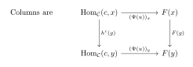
Next, we verify that \Phi and \Psi are mutually inverse:
For any u \in F(c), we have \Phi(\Psi(u)) = (\Psi(u))_c(\operatorname{id}_c) = (F(\operatorname{id}_c))(u) = \operatorname{id}_{F(c)}(u) = u. Thus \Phi \circ \Psi = \operatorname{id}_{F(c)}.
For any \alpha \in \operatorname{Nat}(h^c, F), let u = \alpha_c(\operatorname{id}_c). By the naturality of \alpha applied to a morphism f: c \to x, we have F(f) \circ \alpha_c = \alpha_x \circ h^c(f). Evaluating both sides at \operatorname{id}_c, we get: (F(f))(\alpha_c(\operatorname{id}_c)) = \alpha_x(f \circ \operatorname{id}_c) \implies (F(f))(u) = \alpha_x(f) This precisely means (\Psi(u))_x(f) = \alpha_x(f), so \Psi(\Phi(\alpha)) = \alpha. Thus \Psi \circ \Phi = \operatorname{id}_{\operatorname{Nat}(h^c, F)}.
Hence, \Phi is a bijection. The verification of naturality in both F and c follows standard diagram chasing by applying the definitions of natural transformations and induced maps. ◻
Definition 1.21 (Yoneda Embedding). Let \mathcal{C} be a locally small category. The assignments of representable functors specified in Definition naturally extend to functors from \mathcal{C} into its respective functor categories (or presheaf categories):
The contravariant Yoneda embedding is the functor: y: \mathcal{C} \longrightarrow \mathsf{Set}^{\mathcal{C}^{\operatorname{op}}} which maps an object c \in \mathcal{C} to the contravariant representable functor h_c \in \mathsf{Set}^{\mathcal{C}^{\operatorname{op}}}, and maps a morphism f: c \to d in \mathcal{C} to the natural transformation y(f) = f_*: h_c \Rightarrow h_d induced by post-composition.
The covariant Yoneda embedding is the functor: \tilde{y}: \mathcal{C}^{\operatorname{op}} \longrightarrow \mathsf{Set}^{\mathcal{C}} which maps an object c \in \mathcal{C}^{\operatorname{op}} to the covariant representable functor h^c \in \mathsf{Set}^{\mathcal{C}}, and maps a morphism f: d \to c in \mathcal{C} to the natural transformation \tilde{y}(f) = f^*: h^c \Rightarrow h^d induced by pre-composition.
Theorem 1.1 (The Yoneda Embedding Theorem). Let \mathcal{C} be a locally small category. Then both the contravariant Yoneda embedding y: \mathcal{C} \to \mathsf{Set}^{\mathcal{C}^{\operatorname{op}}} and the covariant Yoneda embedding \tilde{y}: \mathcal{C}^{\operatorname{op}} \to \mathsf{Set}^{\mathcal{C}} are fully faithful functors.
Proof. We prove the theorem for the contravariant Yoneda embedding y; the covariant case follows by a dual argument. To show that y is fully faithful, we must verify that for any two objects c, d \in \mathcal{C}, the map induced by y on hom-sets: y_{c,d}: \operatorname{Hom}_{\mathcal{C}}(c, d) \longrightarrow \operatorname{Nat}(h_c, h_d) is a bijection.
Recall from Theorem (The Yoneda Lemma) that for any object c \in \mathcal{C} and any contravariant functor G: \mathcal{C}^{\operatorname{op}} \to \mathsf{Set}, there is a canonical bijection: \Psi_G: G(c) \xrightarrow{\ \cong\ } \operatorname{Nat}(h_c, G) which maps an element u \in G(c) to the natural transformation whose component at x maps g \in h_c(x) to (G(g))(u).
We apply the Yoneda Lemma by specializing the functor G to be the representable functor h_d \equiv \operatorname{Hom}_{\mathcal{C}}(-, d). This yields a specific canonical bijection: \Psi_{h_d}: h_d(c) \longrightarrow \operatorname{Nat}(h_c, h_d) Since h_d(c) = \operatorname{Hom}_{\mathcal{C}}(c, d) by definition, \Psi_{h_d} is a bijection from \operatorname{Hom}_{\mathcal{C}}(c, d) to \operatorname{Nat}(h_c, h_d).
It remains only to check that the map y_{c,d} matches this canonical bijection \Psi_{h_d} identically. Let f \in \operatorname{Hom}_{\mathcal{C}}(c, d). By the explicit evaluation rule of the Yoneda Lemma, \Psi_{h_d}(f) is the natural transformation whose component at an object x maps a morphism g \in h_c(x) = \operatorname{Hom}_{\mathcal{C}}(x, c) to: (h_d(g))(f) = f \circ g On the other hand, the functor y maps the morphism f: c \to d to the natural transformation y(f) = f_*, whose component at x is defined by post-composition with f: (f_*)_x(g) = f \circ g Since (f_*)_x(g) = (h_d(g))(f) for all objects x and all arrows g, we have y_{c,d}(f) = \Psi_{h_d}(f) for every f \in \operatorname{Hom}_{\mathcal{C}}(c, d).
Because y_{c,d} is identical to the canonical bijection \Psi_{h_d} provided by the Yoneda Lemma, y_{c,d} is itself a bijection. Hence, the Yoneda embedding y is fully faithful. ◻